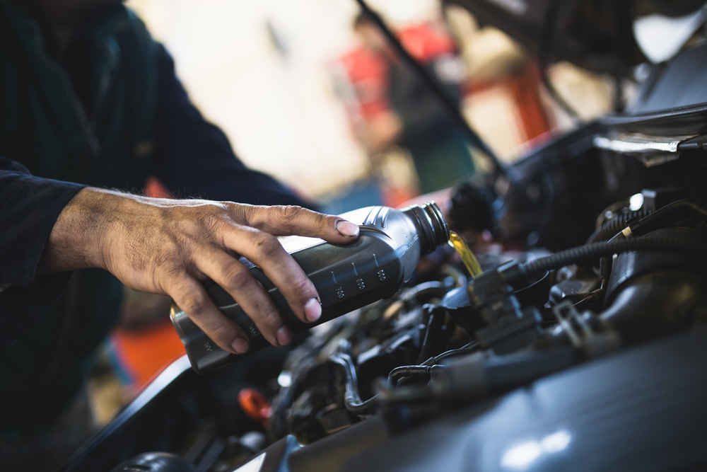
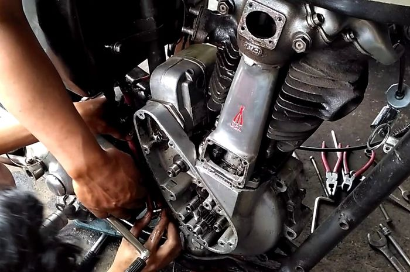
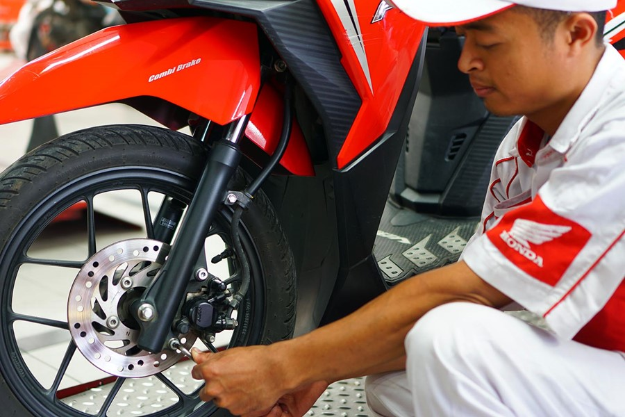

BENGKEL PUTRA PRIMA KEDOYA
Service Ringan
Guna menjaga performa kendaraan tetap dalam kondisi prima dan andal, Anda disarankan untuk melakukan servis ringan, secara berkala. Servis ringan sendiri, merupakan istilah dalam perawatan kendaraan yang sering dan sudah tidak asing kita dengar.
Supaya kondisi dan garansi motor tetap terjaga, setiap pabrikan menganjurkan pemilik untuk servis berkala di bengkel resmi. Nah, berikut ini adalah beberapa jasa servis yang bengkel kami berikan untuk anda.
- Penggantian oli mesin dan filter.
- Pengecekan air radiator.
- Pengecekan lampu-lampu dan klakson.
- Mengecek mesin dan ban.
- Diagnosis terhadap busi, oli mesin, kompresor, minyak rem, filter udara, hingga canister sistem.
- Pengecekan battery atau aki.
- Pembersihan busi.
- Pengecekan dan penyetelan sistem pengereman.
- Mengecek sistem pendingin mesin.
- Mengecek sistem kemudi, dan suspensi.


